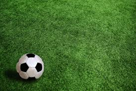
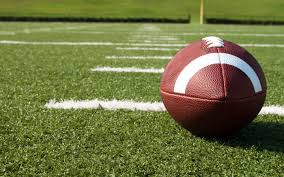
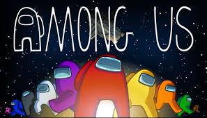

|
| Some sports I played include basketball, soccer, baseball, softball, cricket, tchoukball, volleyball, badminton, bowling, tennis and more.
I play sports in my free time such as baseball and cricket because it is fun to go outside with my brothers and compete. 
Cricket is a fun game to play with all my friends and every time we play, we have such a great time. I am a huge fan of football and basketball, I watch football every Sunday, and I like throwing the football.
I also play ping pong and I am good at it, I played in my gym class and I did not lose a single match. I play almost every sport that I can name.
I had a ping pong table at my house, and I used to play every day because the game was awesome. I played tchoukball at gym class and it was different than most sports, but it was competitive and fun.
I play cricket every summer almost everyday but not anymore. I play baseball in my backyard with my brothers but not anymore.
I love the sport of football because it is so chaotic and very fast paced. My favourite positions are the quarterback and the linebackers because they never get enough credit.
I play a lot of basketball at my old school because there was not a virus going around. At my old school, my friends and I would always play 3-point shooting games to see who was better.
I played soccer often and I was either a goalie or an attacker. Some games I play are Fortnite, Among us and Rocket league.
I am very bad at rocket league but when I play with my friends, I just have a great time.  I used to play Fortnite and I was pretty good at it but now I only play when my brother asks me to play.
I also play among us because every time I figure out who the imposter is, i feel like a detective. |